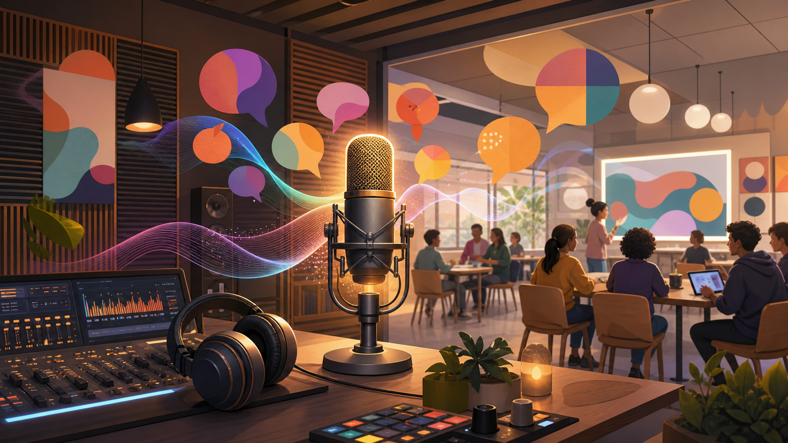

OpenAI와 Molecule.one은 GPT-5.4 기반의 “near-autonomous AI chemist”가 의약화학에서 쓰이는 까다로운 반응 조건을 개선한 사례를 공개했습니다. 핵심은 AI가 단순히 논문을 요약한 것이 아니라, 반응 조건 후보를 제안하고, 실험 결과를 해석하고, 다음 실험 방향을 다시 잡는 반복 탐색 루프에 들어갔다는 점입니다. 원문은 AI가 4-hydroxy-TEMPO 관련 반응에서 TEMPO와 유사한 성능을 내도록 조건을 개선한 과정을 시각 자료와 함께 설명합니다.
인사이트: 창작자 관점에서 이 사례는 “AI가 화면 안에서 이미지를 생성한다”를 넘어, 물질·공정·실험 조건을 다루는 연구 파트너로 이동한다는 신호입니다. 조각, 재료 실험, 표면 처리, 디지털 패브리케이션, 보존·복원 작업에서도 앞으로는 제작 조건을 기록하고, 실패 결과를 데이터화하고, 다음 실험을 제안받는 방식이 중요해질 수 있습니다. 다만 이 사례는 전문 실험실·검증 프로토콜·사람 연구자의 판단이 결합된 결과이므로, 곧바로 일반 창작자가 혼자 화학 실험을 자동화할 수 있다는 뜻은 아닙니다. 정확한 의미는 “실험 설계와 조건 탐색의 보조 지능이 빠르게 현실화되고 있다”는 쪽에 가깝습니다.
Viggle은 캐릭터 이미지나 영상 속 인물을 다른 동작 영상의 움직임에 맞춰 애니메이션화하는 모션 트랜스퍼 도구로 소개되고 있습니다. 기존에는 캐릭터 리깅, 모션캡처, 3D 세팅이 필요했던 작업을 훨씬 가볍게 시도할 수 있게 만드는 계열입니다. 원문 리뷰는 “재미있고 빠른 캐릭터 애니메이션 도구”로서의 장점을 강조하지만, 실제 제작에서는 캐릭터 일관성, 손·발 디테일, 배경과 몸의 경계 처리 같은 품질 검토가 필요합니다.
인사이트: 창작자에게 중요한 점은 완성품을 바로 납품하는 도구라기보다, 움직임 시안과 퍼포먼스 아이디어를 빠르게 확인하는 도구라는 점입니다. 조각 캐릭터, 전시용 아바타, 무용·퍼포먼스 레퍼런스, 교육용 캐릭터 영상을 만들 때 초기 실험 시간을 줄일 수 있습니다. 다만 공공 전시나 상업 영상에 쓰려면 원본 인물·동작 영상의 권리, 얼굴 합성 문제, 생성 결과의 어색함을 후반 작업에서 어떻게 정리할지까지 함께 봐야 합니다.
The Atlantic 조사와 이를 전한 Hypebeast 보도는 Suno, Udio 같은 생성 음악 서비스가 어떤 규모의 음악 데이터를 학습 재료로 삼았는지, 그리고 그 안에 유명 아티스트들의 곡이 어떻게 얽혀 있는지를 다시 수면 위로 올렸습니다. 단순히 “AI가 음악을 만든다”는 기능 소개가 아니라, 생성 음악의 소리·스타일·장르 감각이 어떤 저작물의 축적 위에서 만들어졌는지를 묻는 문제입니다.
인사이트: 음악을 쓰는 영상 제작자, 전시 작가, 교육자는 AI 음악을 배경음처럼 가볍게 쓰기 전에 라이선스와 출처 문제를 확인해야 합니다. 특히 상업 프로젝트, 공모 제출, 기관 전시, 유튜브 공개물에서는 “생성 AI로 만들었으니 자유롭게 써도 된다”가 안전한 판단이 아닙니다. 동시에 이 이슈는 창작자 자신의 작업물이 향후 학습 데이터로 쓰일 때 어떤 권리 표시와 계약 조건이 필요한지 생각하게 만듭니다. 20일자에는 Adobe 계열 반복 소식보다 이 저작권 이슈가 창작자에게 더 직접적입니다.
Warner Music China가 AI 가상 가수 Wu AI-Hua 이후 Dream Maker와 전략적 협업을 맺으며 디지털 아티스트 사업을 확대한다는 보도입니다. Dream Maker는 다수의 가상 싱어를 개발해 온 회사로 소개되고, Warner Music China는 단발성 바이럴 캐릭터가 아니라 장기적인 디지털 아티스트 라인업과 IP 운영 가능성을 보고 있는 것으로 읽힙니다.
인사이트: 이 소식은 “AI가 노래를 부른다”보다 넓게 봐야 합니다. 음악, 캐릭터 디자인, 숏폼 영상, 팬 커뮤니티, 공연 연출, 굿즈/IP가 결합된 디지털 퍼포머 모델이 음악 산업 안에서 실험되고 있다는 의미입니다. 전시나 교육 프로젝트에서도 가상 인물·AI 음성·캐릭터 서사를 함께 다루는 경우가 늘어날 수 있습니다. 다만 실제 사업화에는 목소리 권리, 캐릭터 소유권, 팬덤의 수용성, 인간 아티스트와의 관계가 모두 걸립니다.
ElevenLabs와 AI Lab Poland — 음성 AI가 국가 단위 창작·교육 인프라로 커지는 흐름

관련 이미지를 생성했습니다
폴란드 정부 산하 Vinci/BGK가 ElevenLabs에 투자하고, ElevenLabs와 함께 AI Lab Poland를 출범한다는 소식입니다. ElevenLabs는 이미 음성 합성·더빙·다국어 내레이션 분야에서 강한 존재감을 가진 회사이고, 이번 투자는 한 기업의 성장 뉴스라기보다 음성 AI를 국가 단위 연구·스타트업·콘텐츠 생태계와 연결하려는 움직임으로 볼 수 있습니다. 특히 음성 기술이 단순 TTS 도구에서 교육, 공공 서비스, 접근성, 미디어 제작 인프라로 확장되고 있다는 점이 핵심입니다.
인사이트: 창작자에게 중요한 지점은 ‘목소리 생성’ 자체보다 음성 제작의 운영 방식이 바뀐다는 점입니다. 전시 해설, 교육 콘텐츠, 다국어 안내, 영상 내레이션, 캐릭터 보이스처럼 원래 성우·녹음·편집 비용이 들어가던 영역을 더 빠르게 실험할 수 있습니다. 다만 목소리 권리, 실제 성우와의 계약, 합성 음성 고지, 다국어 번역의 뉘앙스 검수는 반드시 남습니다. 따라서 이 항목은 ‘음성 AI를 아무 데나 써도 된다’가 아니라, 음성 콘텐츠 제작을 프로젝트 초반부터 설계해야 하는 인프라 변화로 보는 것이 맞습니다.
VentureBeat 보도는 오픈소스 AI 검색 에이전트 Harness-1이 복잡한 자료 묶음에서 관련 정보를 찾아내는 능력을 앞세우고 있다고 설명합니다. 최근 에이전트 경쟁은 단순히 “질문에 답하기”가 아니라, 여러 문서와 웹 자료를 뒤져 근거를 찾고, 필요한 정보를 회수하고, 그 과정을 다시 검증하는 쪽으로 이동하고 있습니다.
인사이트: 논문 조사, 공모 자료 탐색, 교육 커리큘럼 구성, 전시 리서치처럼 자료가 많은 작업에서는 검색 품질이 곧 결과물의 질을 좌우합니다. 이런 검색 에이전트는 창작자를 대신해 결론을 내리는 도구라기보다, 근거 후보를 빠르게 좁혀 주는 리서치 보조원에 가깝습니다. 실제 사용 시에는 출처 확인, 날짜 확인, 원문 비교가 필수이며, 특히 공모·논문·법률처럼 오류 비용이 큰 분야에서는 자동 요약만 믿지 말고 링크와 원문을 남기는 운영 방식이 필요합니다.